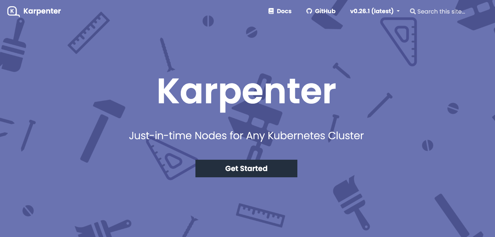
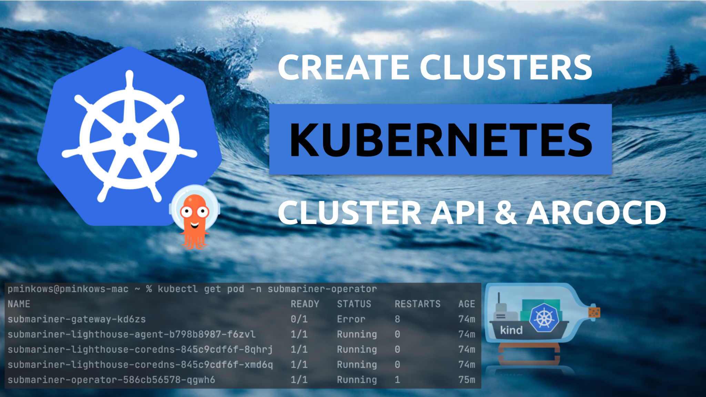
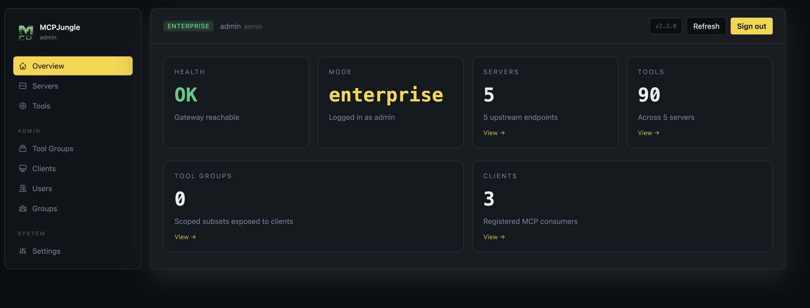
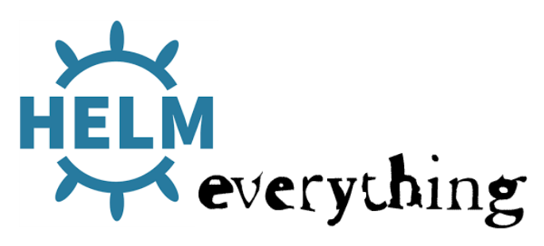
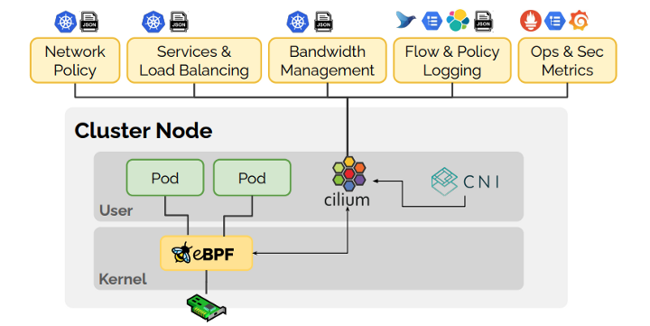

Building a Secure Webhook Gateway for Private n8n
How I kept n8n private while still letting Slack, Google Chat, and other public webhook sources trigger internal workflows through a small Cloudflare-protected gate.
Read articlePersonal technical writing about Kubernetes, n8n automation, cloud infrastructure, security boundaries, and the small production decisions that matter.


Archive
How I kept n8n private while still letting Slack, Google Chat, and other public webhook sources trigger internal workflows through a small Cloudflare-protected gate.
Read article
How I moved from scattered MCP configs in Claude, Cursor, and Codex to one self-hosted gateway with dashboard, tokens, groups, and access control.
Read articleDeploying and testing Karpenter on EKS, with notes on node provisioning, instance selection, and autoscaling behavior.
Read articleA walkthrough of Cluster API and ArgoCD for managing Kubernetes clusters from a single declarative source.
Read article
Notes on building reusable Helm library chart templates and testing rendered manifests with helm-unittest.
Read article
Local multicluster Kubernetes notes using Kind and Cilium, focused on learning cluster connectivity patterns.
Read articleTopics
EKS, autoscaling, networking, GitOps, and operating clusters in real environments.
n8n, Slack workflows, internal tooling, and secure integration patterns.
MCP gateways, agent tools, client configuration, and governed access to real systems.
Ingress control, WAF boundaries, secret handling, and practical production guardrails.
Debug stories, migration notes, and decisions that are useful to revisit later.
About
I work on DevOps, cloud infrastructure, automation, and internal platforms. This blog is my place to turn daily engineering work into readable notes: what problem appeared, what tradeoff mattered, and what I would keep for next time.